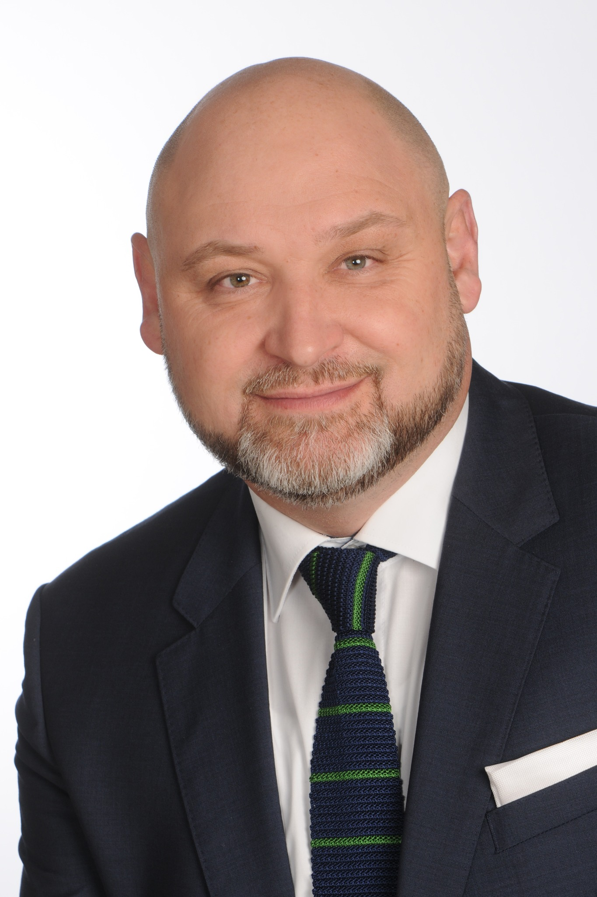

Alles in einer Box
Trade article on the development of Unify’s partner sales in Austria — featuring my photograph and personal comments on channel strategy.
Lead Major Account Manager (Channel) | Mitel Austria
Strategic Partners · Distributors · Channel Business
As Lead Major Account Manager (Channel) at Mitel Austria, I focus on strategic partnerships, distributor relationships and the sustainable development of the indirect sales channel. My role is centered on channel partners — not direct end-customer sales.
About meLinkedIn ↗
My work is dedicated to building long-term relationships with strategic partners and distributors, identifying joint business opportunities and strengthening the Austrian channel ecosystem.
My professional roots are in communications engineering at Siemens COM. My career subsequently took me through Siemens Enterprise Communications, Unify and Atos Unify to Mitel. In earlier positions, I worked in provider and partner business in Austria, including with A1 as a strategic partner. This is part of my professional background, not my current remit.
My career began at Siemens in communications technology (Siemens COM). Working as a regional field technician, in fault resolution and as a team leader, I gained hands-on experience in telephony, technical operations and team leadership.
At Siemens, my responsibilities also included the construction and servicing of GSM mobile network base stations, including projects for Hutchison (Drei) and T-Mobile (now Magenta). This technical foundation continues to shape my understanding of communications solutions and partner requirements.
Over the course of my career, I moved from engineering into sales and took on responsibilities in the Austrian channel, partner and service-provider business. In earlier roles, this included working with A1 as a strategic partner.
Lead Major Account Manager (Channel). Focus on strategic channel partnerships, distributors and the development of indirect sales in Austria.
Experience in the Austrian service-provider market, working with strategic partners and in indirect sales.
Earlier roles in Austrian channel and partner business, including service-provider partnerships.
Experience in channel and partner sales for enterprise communications.
Experience in enterprise communications and the transition from technical roles into sales and partner business.
Technical foundation in telephony and communications technology; regional field technician, fault resolution, team leader, and construction and servicing of GSM base stations.
Selected trade publications featuring my personal statements on enterprise communications, channel business and strategic partnerships.
Trade article on the development of Unify’s partner sales in Austria — featuring my photograph and personal comments on channel strategy.
Ten years of partnership between TFK and Unify — featuring my personal comments on cooperation and partner strategy.
Read original article ↗Trade article on reference projects and the Unify partner network — featuring my personal statement.
Read original article ↗Advertorial on enterprise communications and collaboration — featuring my expert statement.
Advertorial on cloud communications — featuring my personal statement on the channel business.